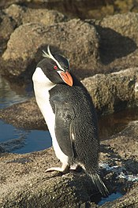

PINGUINOS
Conservacion y perservacion de espicies
Aproximadamente dos tercios de las especies de pingüinos están incluidas como amenazadas en la Lista Roja de la UICN, lo que las convierte en una de las aves marinas más amenazadas. La pérdida de hábitat, las enfermedades y las enfermedades infecciosas propagadas por los turistas se vislumbran como amenazas. La pesca comercial en el Océano Austral también es una preocupación importante, ya que ha reducido el suministro de pescado a aproximadamente la mitad en la Península Antártica. Esto obliga a muchos pingüinos a competir por comida y los pone en peligro de ser capturados accidentalmente por redes de pesca.

Entre las mayores amenazas para las poblaciones de pingüinos se encuentra el cambio climático. El calentamiento en las regiones polares ha derretido el hielo marino, del que dependen los pingüinos para encontrar comida y construir nidos. Las condiciones rápidamente cambiantes significan que la Antártida podría perder a la mayoría de sus pingüinos debido al cambio climático a finales de siglo. Para sobrevivir, es posible que tengan que trasladarse a nuevos hábitats.